SOURCE WALL
400No narrowing yet. Images have not been assessed against a brief.
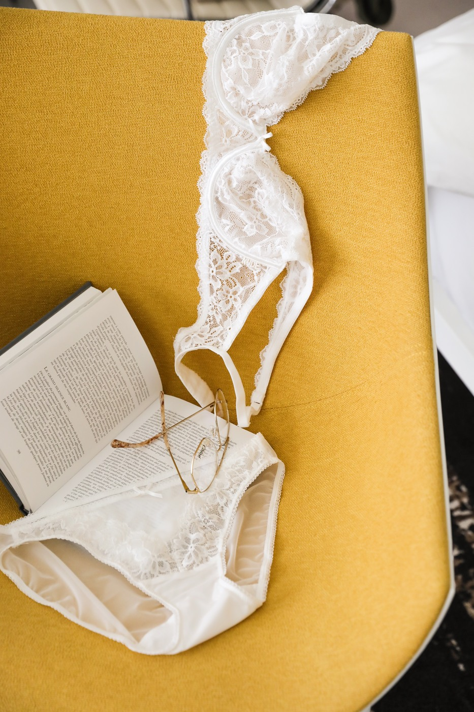
IGLace on ochre
IG-262Unassessed reference
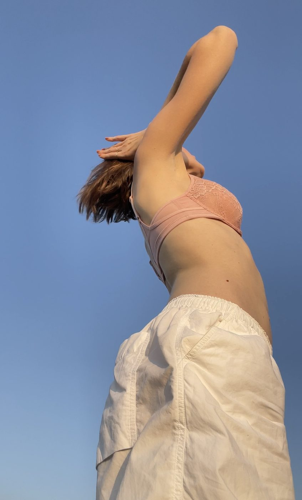
IG REELOut in the light
IMG-4489Unassessed reference
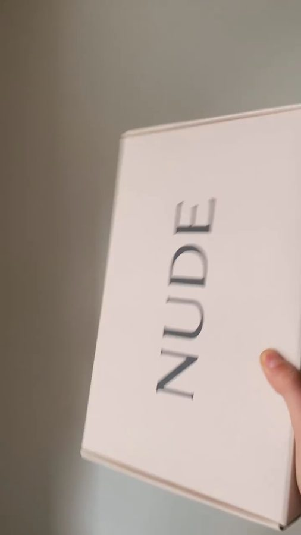
VIDEO POSTER · 1.0sBox, in motion
MV-BLKUnassessed reference
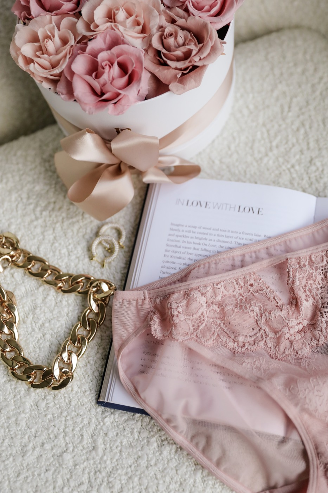
IGBlush & flowers
IG-277Unassessed reference
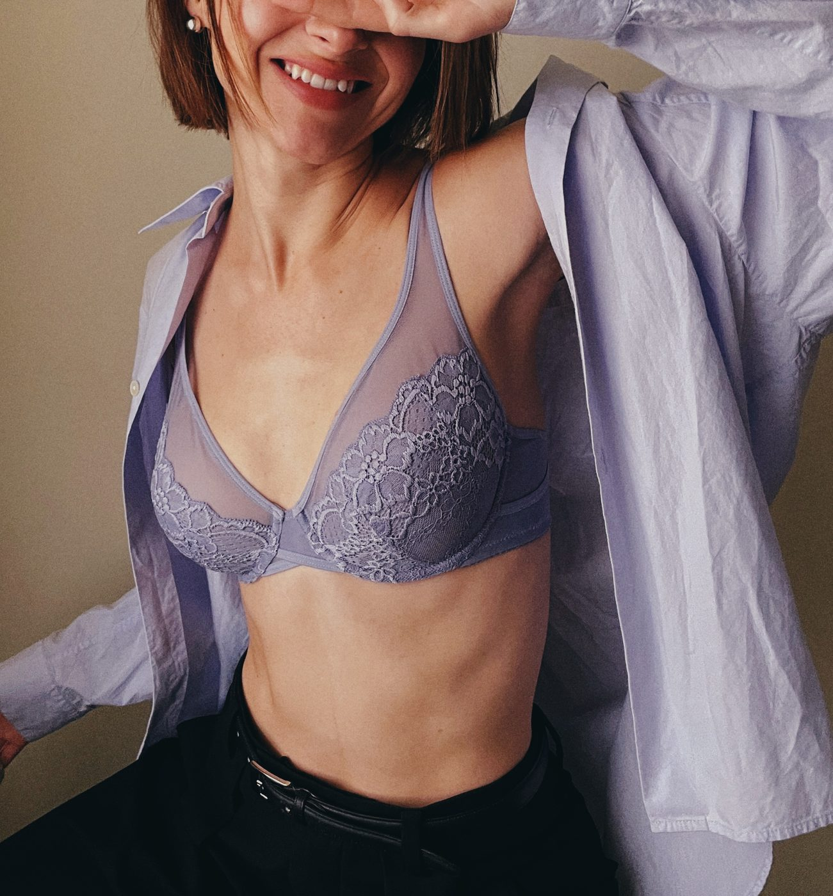
IG REELAn everyday layer
WEAR-8106Unassessed reference
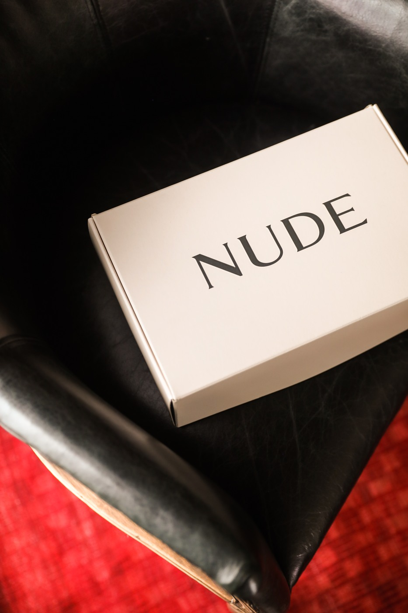
IGThe unboxing note
IG-072Unassessed reference
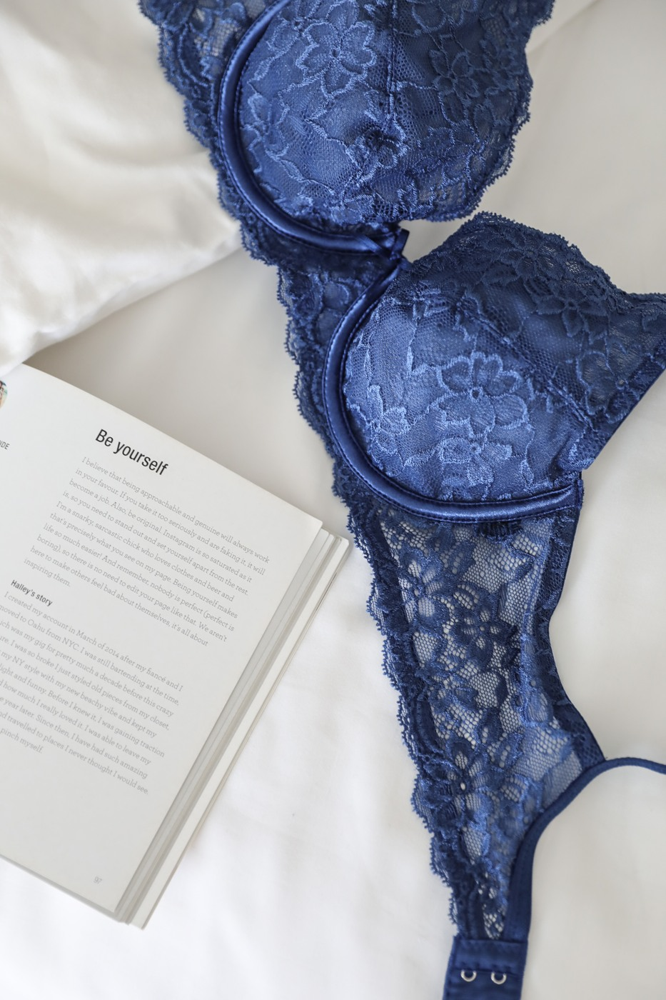
IGA closer look at lace
IG-256Unassessed reference
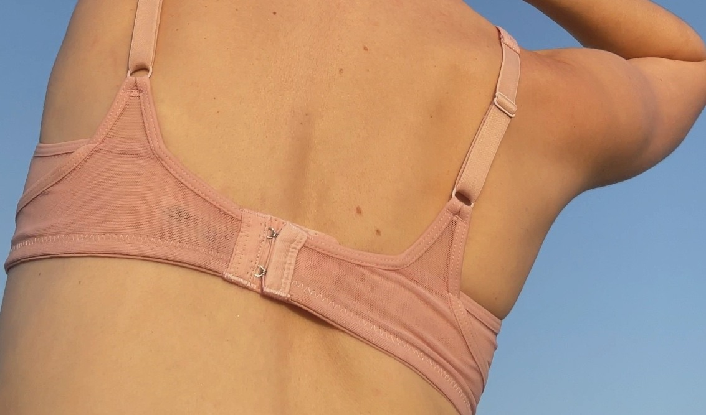
IG REELBack construction
REEL-050Unassessed reference
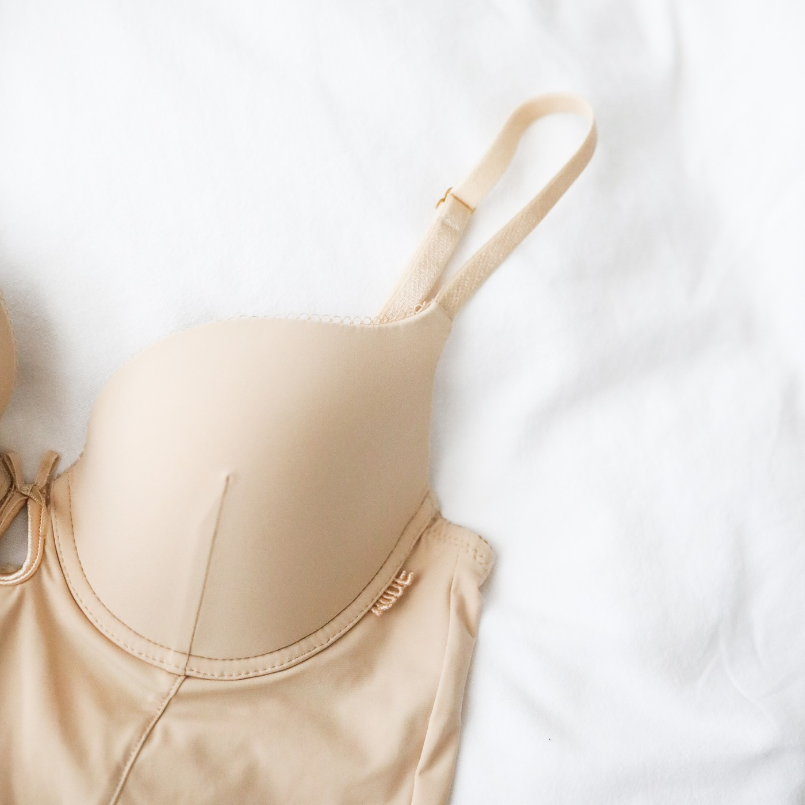
IGNeutral, close up
IG-245Unassessed reference
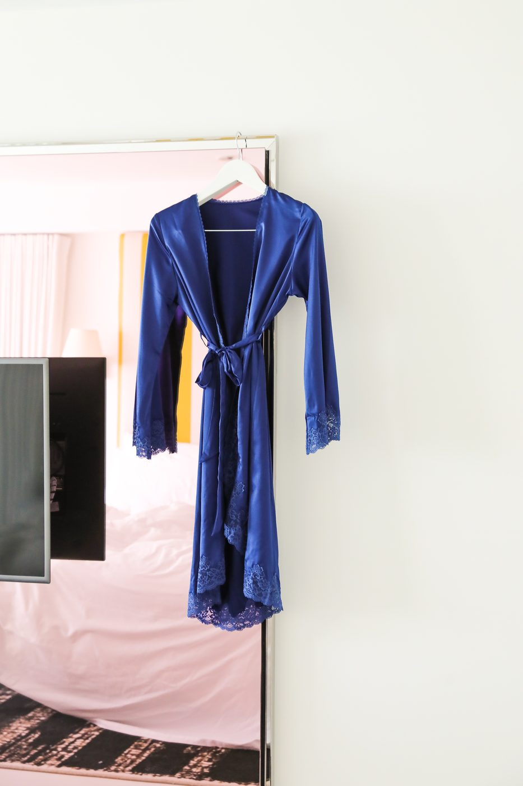
IGBlue robe
ROBE-5059Unassessed reference
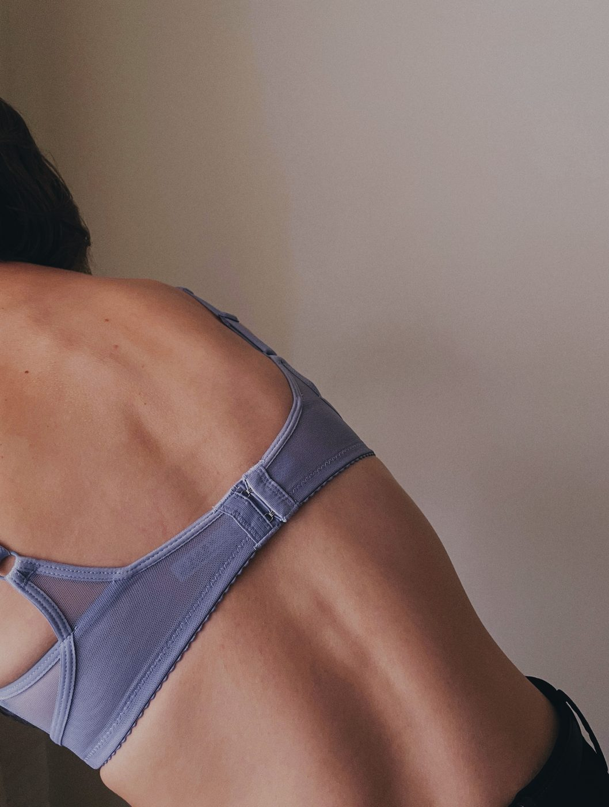
IG REELBack construction
BACK-5F20Unassessed reference
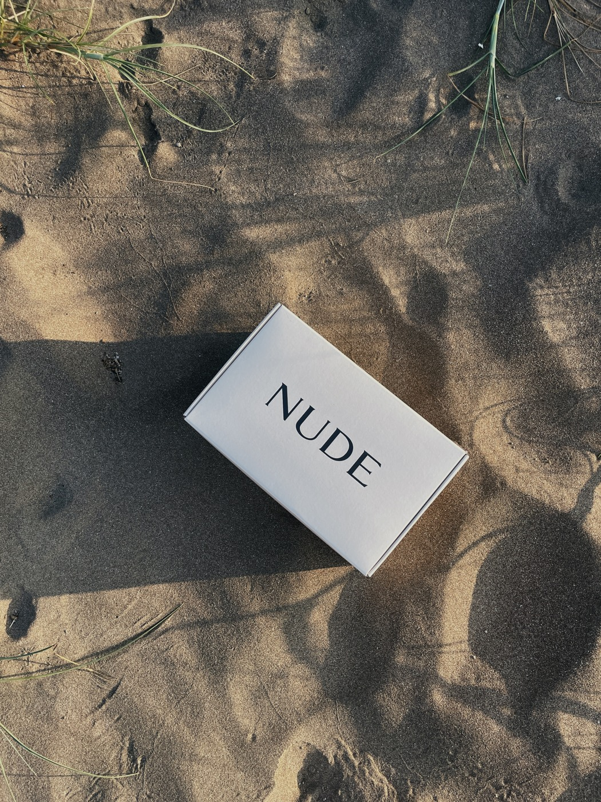
IG REELBox in sunlight
REEL-045Unassessed reference
Unassessed is not unsuitable. Nothing is assigned to Shortlist, Needs Review or Remaining yet.